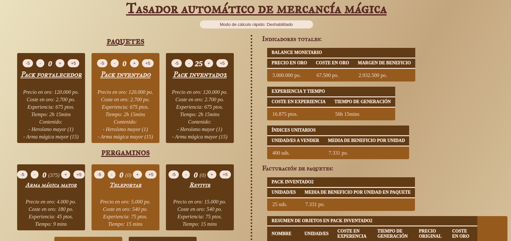

Tasador automático de mercancía mágica
Un sistema de cálculo adaptado adaptado a las particularidades del juego de rol 'Puerta de Baldur'
Introducción y funcionamiento
Consiste en un sistema de gestión de inventarios, que emplea dos archivos JSON relacionados entre sí, a modo de bases de datos modificables desde database.js.
El fichero principal, database, está compuesto de diversos objetos mágicos, y el fichero de database_paquetes, es capaz de agruparlos entre sí, siendo dependiente del anterior para funcionar, conservando cada objeto dentro de su paquete las propiedades previamente definidas
El desarrollo de este proyecto pone de relieve un uso intensivo del DOM - para manipular e incrustar elementos en el HTML -, proyectando tablas con los cálculos pertinentes de la gestión de inventarios requerida para el trabajo de comerciante en el videojuego de rol "Puerta de Baldur", y en la gestión efectiva de información mediante JSON.
- En relación a la manipulación del DOM, destacan las funciones enContenedor(texto, tipo, container, atributos) para introducir cómodamente unas etiquetas dentro de otras a través del atributo id, y la función crearTabla(contenidoTabla, container, idRef, classRef) para generar rápidamente y sin incurrir en verbosidades y redundancias, tablas verticales con título, encabezado, cuerpo, y footer según lo especificado. Utilizadas ambas en la función de actualización de pantalla.
- La actualización de la pantalla, actualizarInformacion(), siempre se realiza al pulsar los botones de sumar o restar (botones "+", "-"), permitiendo así el flujo de información en la cuenta de resultados cada vez que el usuario desea realizar una operación. Esta actualización no hace más que recorrer los archivos JSON - previamente modificados para guardar las unidades pulsadas y otros datos - y expresarlos en formato HTML.
- La gestión de la base de datos cuenta con una sección de funciones dedicada, usadas ampliamente en el cálculo de resultados:
- getValorObjeto(nombre, clave)
- setValorObjeto(nombre, clave, valor)
- getValorPaquete(nombre, clave)
- setValorPaquete(nombre, clave, valor)
- getValorPaqueteObjeto(nombrePaquete, nombreObjeto, clave)
- Funciones de formato, para dar formato al tiempo, formatoTiempoMins(mins), y a parámetros como la experiencia, las piezas de oro, unidades de mercancía con formatoNumerico(numero, extra) y así facilitar su legibilidad.
Demostración en vídeo
Repositorio y descarga
Puedes ver y descargar el repositorio en esta página de GitHub.